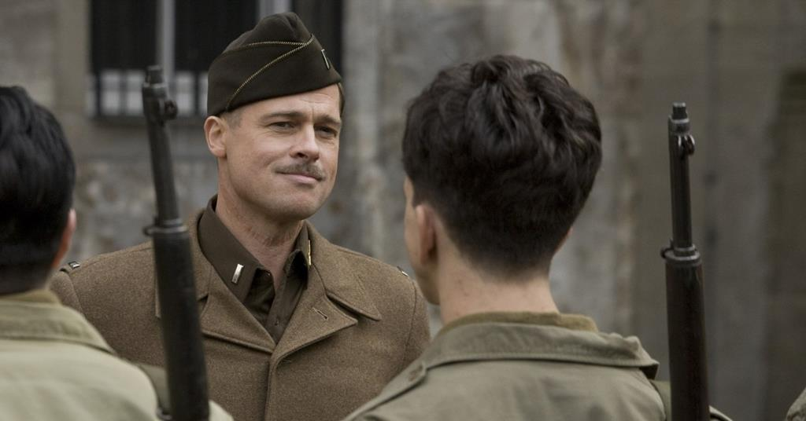
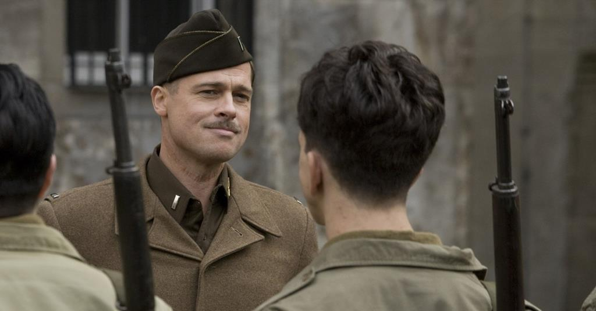

Вторая часть экранизации Фрэнка Герберта продолжает историю первого фильма. После нападения Харконненов на Арракин (в ходе которого был убит глава дома Атрейдесов и отец главного героя — герцог Лето) главный герой Пол (Тимоти Шаламе) вместе с матерью (Ребекка Фергюсон) скрылся в пустыне, где встретился с группой фрименов под предводительством одного из старейшин народа, Стилгаром (Хавьер Бардем). Фильм Вильнева стартует сразу после финальной сцены «Части первой» и рассказывает дальнейшую историю Пола Атрейдеса, его путь к свершению мести и предначертанному величию. Пол должен найти свое место в обществе коренных обитателей Арракиса, а также воскреснуть из небытия, попутно приняв решения, которые приведут к новой межзвездной войне. «Дюна. Часть вторая» покажет становление молодого Атрейдеса как мессии во главе фрименов, свершение возмездия Харконненам и его путь к императорскому трону.

| Год: | 2024 |
| Страна: | США |
| Жанр: | фантастика, боевик, драма, приключения |
| Режиссёр: | Дени Вильнёв |
Один ушлый американец ещё со студенческих лет приторговывал наркотиками, а теперь придумал схему нелегального обогащения с использованием поместий обедневшей английской аристократии и очень неплохо на этом разбогател. Другой пронырливый журналист приходит к Рэю, правой руке американца, и предлагает тому купить киносценарий, в котором подробно описаны преступления его босса при участии других представителей лондонского криминального мира — партнёра-еврея, китайской диаспоры, чернокожих спортсменов и даже русского олигарха.

| Год: | 2019 |
| Страна: | США, Великобритания |
| Жанр: | криминал, комедия, боевик |
| Режиссёр: | Гай Ричи |
Первый год немецкой оккупации Франции. Офицер союзников лейтенант Альдо Рейн (Брэд Питт) собирает команду еврейских солдат, чтобы совершить жестокие акты возмездия против нацистов, включая снятие с них скальпов. Он и его люди объединяются с Бриджит фон Хаммерсмарк, немецкой актрисой и тайным агентом, чтобы свергнуть лидеров Третьего рейха. Их судьбы сходятся с владелицей театра Шошанной Дрейфус, которая стремится отомстить нацистам за казнь ее семьи.
 

| Год: | 2009 |
| Страна: | Германия, США |
| Жанр: | боевик, драма, комедия, военный |
| Режиссёр: | Квентин Тарантино |